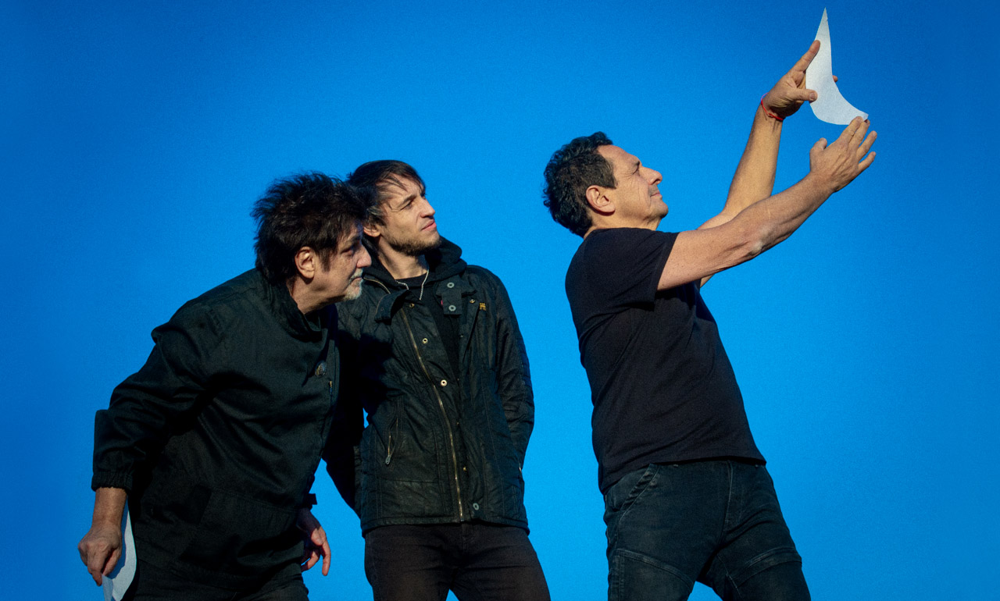

Divividos es una banda Argentina de rock formada en 1988 en Hurlingham tras la disolución de Sumo. encabezada por Ricardo Mollo en la guitarra y Diego Arnedo en el bajo, acompañados en quel entonces por Gustavo Collado en la batería, se formó lo que hot conocemos como una de las bandas de rock más clásicas e importantes de nuestro pais.
